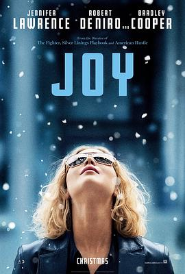

奋斗的乔伊 / Joy
又名：翻转幸福(台) / 欢姐当自强(港) / 乔伊的发明 / 乔伊 / 拖把女王 / 发明主妇 / 乔伊的奋斗
作品信息
| 导演 | 大卫·O·拉塞尔 |
| 编剧 | 大卫·O·拉塞尔 / 安妮·玛莫罗 |
| 主演 | 詹妮弗·劳伦斯 / 罗伯特·德尼罗 / 埃德加·拉米雷兹 / 布莱德利·库珀 / 戴安·拉德 / 维吉妮娅·马德森 / 伊莎贝拉·罗西里尼 / 达丝莎·坡兰科 / 伊丽莎白·霍尔姆 / 苏珊·卢琪 / 劳拉·怀特 / 莫里斯·贝纳德 / 唐娜·米尔斯 / 吉米·让-刘易斯 / 约翰·伊诺斯三世 / 埃里卡·麦克德莫特 |
| 类型 | 剧情 / 喜剧 / 传记 |
| 制片国家/地区 | 美国 |
| 语言 | 英语 / 西班牙语 |
| 上映日期 | 2015-12-25(美国) |
| 片长 | 124分钟 |
| IMDb | tt2446980 |
最后一次看到是 2026-08-12T21:11:14+08:00 · 豆瓣原页